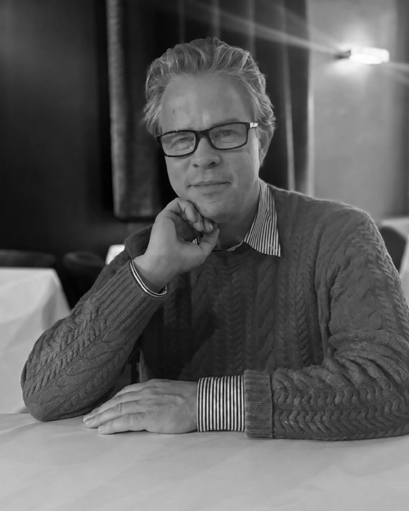

Alex Amies is a Doctoral Researcher, Chartered Engineer, CIBSE Fellow and entrepreneur specialising in building analytics, automation and the integration of controls with dynamic simulation. He was awarded an IMechE undergraduate scholarship to read Mechanical Engineering at the University of Bristol, graduating with an MEng in 2004. He later completed a second master’s in Building Services Engineering at LSBU, graduating with an MSc in 2016.
Alex co-founded re:sustain in 2021, a PropTech start-up which pioneers advanced remote optimisation services for commercial real estate. In 2025, he co-founded BirdLab to support applied research and development at the confluence of industry practice and scientific methodology.
King’s College London profile
The story behind
BirdLab
Alex Amies reflects on the experiences that shaped his career, his route into building performance and the ideas behind BirdLab. Listen to the complete conversation or choose a chapter to begin at a particular part of the story.

Chapters
- 01Welcome
- 02Opening thoughts on entrepreneurial engineering
- 03Introducing buildings
- 04Big commercial buildings
- 05Construction variations
- 063rd startup: project management
- 07Gaps in the market in general
- 08Architecture
- 09Control strategy oversight
- 10Web analytics
- 11Building variables
- 12Conned into cooling
- 13Building Automation/Management Systems (BAS/BMS)
- 14BAS/BMS home analogy
- 15Bob the building manager
- 16Networked controllers
- 17Autonomous control
- 18BAS/BMS point types
- 19Record savings achieved
- 20Retrofit embodied carbon
- 21BAS/BMS experience
- 22Building analytics
- 23Reactive vs proactive maintenance
- 24Building Energy Management Systems (BEMS)
- 25Discovering a gap in the market
- 26Building Information Modelling (BIM)
- 274th & 5th startups: filling the market gap
- 28Building simulation applied
- 29Savings calculation methodology
- 30Overall savings achieved
- 31Global asset managers
- 326th startup: special purpose vehicle
- 33Future research & development
- 34Working with AI models
- 35Closing thoughts on entrepreneurial engineering